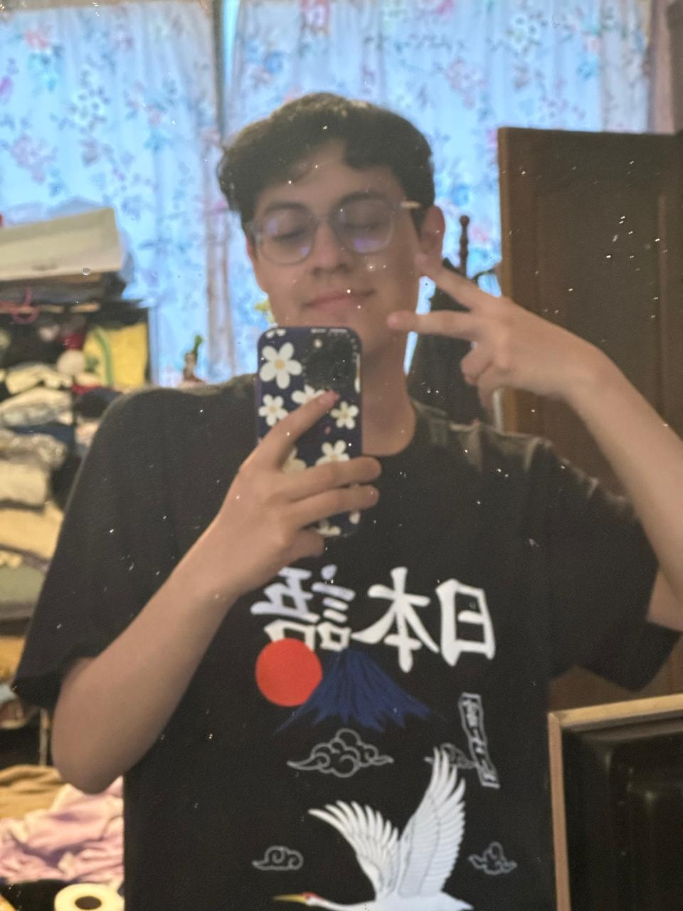
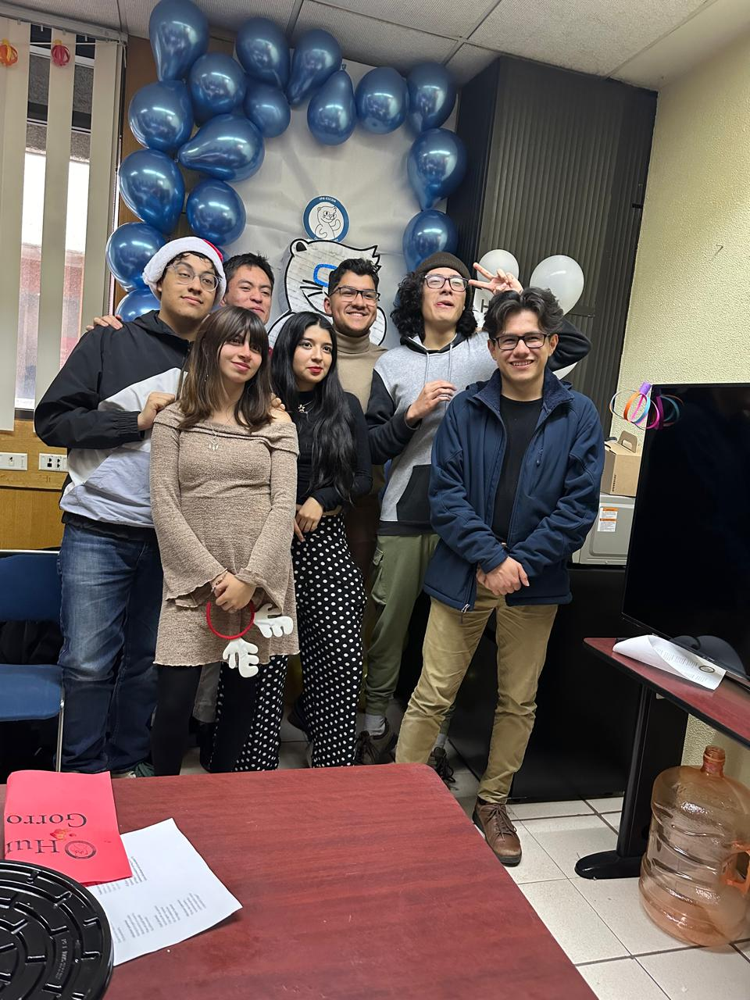

El 17 de septiembre de 2004, en el Hospitalito Gustavo Guerrero de la colonia Morelos, Ciudad de México, nació Alejandro Martín Jiménez Rodríguez (o sea, yo jajaja). Soy el menor de la familia, mi hermana mayor Ana Martín (de 31 años) y mi hermano de en medio Luis Martín (de 29 años). Y sí, los tres llevamos el apellido Martín.
Les presento a mis padres: mi mamá Georgina Rodríguez y mi papá Martín Jiménez (aquí está la razón por la cual los tres nos llamamos Martín). Actualmente, vivo con ellos a excepción de mi hermana, que se casó y se mudó 👰➡️🏠.
Y no menos importantes, en nuestra casa también viven dos integrantes más: nuestras mascotas, Tomas (un perico) y Wilis (un perrito), que igual forman parte de nuestra familia.

Actualmente estoy estudiando la carrera de ingenieria en sistemas computaciones en la ESCOM del IPN. Durante este año y medio que llevo en la escuela he conocido a varias personas que considero mis amigos, sin lugar a duda ellos han sido una gran ayuda y una parte fundamental para seguir adelante y disfrutar de la escuela, creo que el trabajo en equipo es una parte fundamental ya que simplemente solos no podríamos hacer o lograr las mismas cosas. 
¿Qué es la programación competitiva?
La programación competitiva es un deporte mental en el que los participantes resuelven problemas algorítmicos y matemáticos usando programación. Se llevan a cabo en competencias de tiempo limitado, donde los concursantes deben escribir código eficiente y correcto lo más rápido posible.
(Un libro que enseña un poco de Programación Competitiva)
En este tipo de concursos he participado desde la secundaria. La verdad, es una actividad que me gusta bastante; me parece muy divertida, ya que ningún problema es igual a otro. Pueden llegar a ser similares, pero nunca iguales. Durante el nivel preuniversitario, participé en la OMI (Olimpiada Mexicana de Informática) durante los años 2019, 2020 y 2021, donde obtuve en las tres competencias medalla de plata 🥈. A nivel universitario, he participado en la ICPC (International Collegiate Programming Contest). Esta competencia es en equipos de tres personas. En mi primer año, junto a mi equipo, logramos clasificar a la etapa final de México, aunque no obtuvimos una posición muy buena (recuerdo que fue alrededor del lugar 30 de 66 equipos). En mi segunda participación, con un nuevo equipo, también clasificamos a la final de México, donde obtuvimos el quinto lugar. Aun así, no logramos clasificar a la siguiente etapa. En mi última participación, con el mismo equipo del año anterior, clasificamos nuevamente a la final de México y obtuvimos el segundo lugar (de nuevo medalla de plata T_T 🥈) de 120 equipos. Fue un muy buen resultado, ya que clasificamos a la siguiente etapa para competir por un cupo en la final mundial :D (El resultado se decidirá en el próximo examen del día domingo). Realmente es una actividad que me gusta bastante, y espero que el siguiente año, junto a mi increíble equipo, podamos ganar por primera vez esa medalla de primer lugar.
Comida Favorita
Música Favorita
Paulo Ezequiel Londra (Córdoba, 12 de abril de 1998) es un cantante y compositor argentino. Su carrera musical comenzó en competencias de freestyle realizadas en plazas de manera amateur, como El Quinto Escalón, donde destacó por su estilo único al rapear.
En 2017, lanzó su primer sencillo, «Relax», y ganó notoriedad con la canción «Condenado para el millón». Un año después, en 2018, se convirtió en el artista argentino con más reproducciones en Spotify y YouTube, impulsado por éxitos como «Adán y Eva», «Nena maldición» y «Chica paranormal», además de colaboraciones con reconocidos artistas como Becky G en «Cuando te besé» y Piso 21 en «Te amo».
💜MI CANCIÓN FAVORITA💜
ÁLBUMES
Mi color favorito es el morado 💜
Armar cubos rubik: Es un pasatiempo que actualmente no suelo hacer mucho pero de mas pequeño era algo en lo que me entretenía bastante (mi cubo favorito es el 4x4), tanto que lo logre a llegar a armar en un tiempo de 11 seg en un torneo de forma oficial 🤪
League of Legends
League of Legends (LoL) es un juego multijugador en línea del género MOBA (Multiplayer Online Battle Arena), desarrollado por Riot Games y lanzado en 2009. Desde su salida, se ha convertido en uno de los juegos más populares y jugados del mundo, con una enorme base de jugadores y una escena competitiva global.
En League of Legends, dos equipos de cinco jugadores se enfrentan en un mapa llamado "La Grieta del Invocador". El objetivo principal es destruir la base enemiga, conocida como el Nexo, mientras proteges la tuya. Cada jugador controla a un campeón único, que posee habilidades especiales y características diferentes, como tanques, asesinos, magos y tiradores.
Cuphead
Cuphead es un videojuego de plataformas y disparos desarrollado por Studio MDHR. Lanzado en 2017, el juego se inspira en los dibujos animados de los años 30, con una estética completamente dibujada a mano, animaciones fluidas y una banda sonora de jazz que complementa su estilo retro.
El juego sigue a Cuphead y su hermano Mugman, quienes, tras perder una apuesta contra el Diablo, deben saldar su deuda recolectando los contratos de alma de otros personajes. Para lograrlo, deben enfrentarse a una serie de jefes desafiantes en diferentes niveles, viajando a través de la Isla Tintero.
Valorant
Valorant es un juego de disparos táctico en primera persona (FPS) desarrollado por Riot Games y lanzado en junio de 2020. Combina la precisión y estrategia de juegos como Counter-Strike con elementos únicos de habilidades y personajes al estilo de Overwatch, creando una experiencia dinámica y emocionante.
El juego se centra en equipos de cinco jugadores que se enfrentan en rondas de ataque y defensa. Un equipo intenta colocar una bomba (Spike) en un área designada del mapa, mientras que el otro intenta impedirlo, desactivando la bomba o eliminando a todos los enemigos.